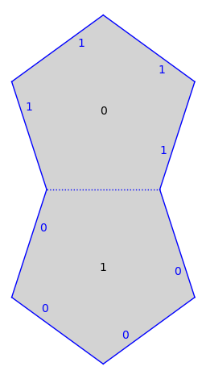
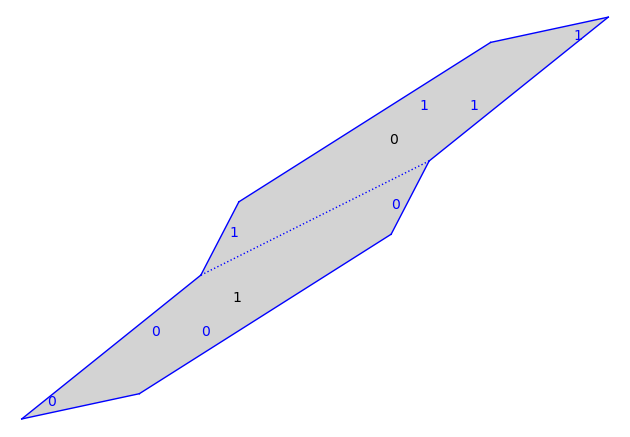
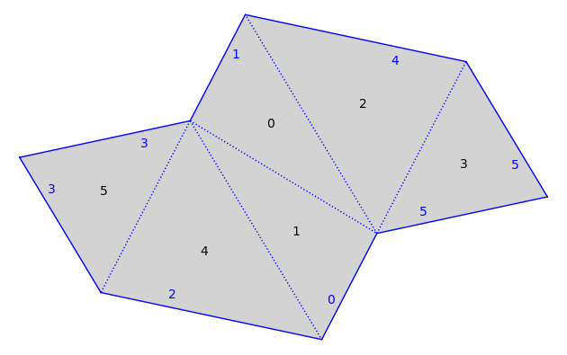
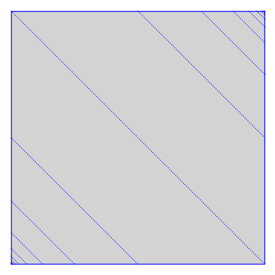
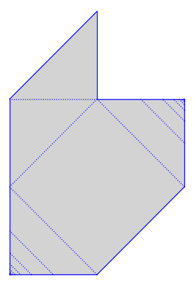
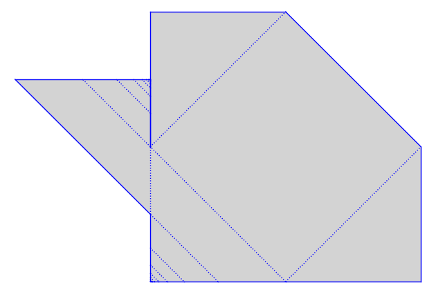

The GL(2,R) action, the Veech group, Delaunay decomposition¶
Initial version by Pat Hooper whooper@ccny.cuny.edu, Dec 16, 2017.
from flatsurf import *
Acting on surfaces by matrices.¶
s = translation_surfaces.veech_double_n_gon(5)
s.plot()

m=matrix([[2,1],[1,1]])
You can act on surfaces with the $GL(2,R)$ action
ss = m*s
ss
TranslationSurface built from 2 polygons
ss.plot()

To “renormalize” you can improve the presentation using the Delaunay decomposition.
sss = ss.delaunay_decomposition().copy(relabel=True)
sss.plot()

The Veech group¶
Set $s$ to be the double pentagon again.
s = translation_surfaces.veech_double_n_gon(5)
It is best to work in the field in which the surfact is defined.
p=s.polygon(0)
p
Polygon: (0, 0), (1, 0), (1/2*a^2 - 1/2, 1/2*a), (1/2, 1/2*a^3 - a), (-1/2*a^2 + 3/2, 1/2*a)
The surface has a horizontal cylinder decomposition all of whose moduli are given as below
modulus = (p.vertex(3)[1]-p.vertex(2)[1])/(p.vertex(2)[0]-p.vertex(4)[0])
AA(modulus)
0.3632712640026804?
m = matrix(s.base_ring(),[[1, 1/modulus],[0,1]])
show(m)
\(\displaystyle \left(\begin{array}{rr}
1 & \frac{2}{5} a^{3} \\
0 & 1
\end{array}\right)\)
show(matrix(AA,m))
\(\displaystyle \left(\begin{array}{rr}
1 & 2.752763840942347? \\
0 & 1
\end{array}\right)\)
The following can be used to check that $m$ is in the Veech group of $s$.
s.canonicalize() == (m*s).canonicalize()
True
Infinite surfaces¶
Infinite surfaces support multiplication by matrices and computing the Delaunay decomposition. (Computation is done “lazily”)
s=translation_surfaces.chamanara(1/2)
s.plot(edge_labels=False,polygon_labels=False)

ss=s.delaunay_decomposition()
ss.graphical_surface().make_all_visible(limit=20)
ss.plot(edge_labels=False,polygon_labels=False)

m = matrix([[2,0],[0,1/2]])
ms = m*s
ms.graphical_surface().make_all_visible(limit=20)
ms.plot(edge_labels=False,polygon_labels=False)

mss = ms.delaunay_decomposition()
mss.graphical_surface().make_all_visible(limit=20)
mss.plot(edge_labels=False,polygon_labels=False)

You can tell from the above picture that $m$ is in the Veech group.